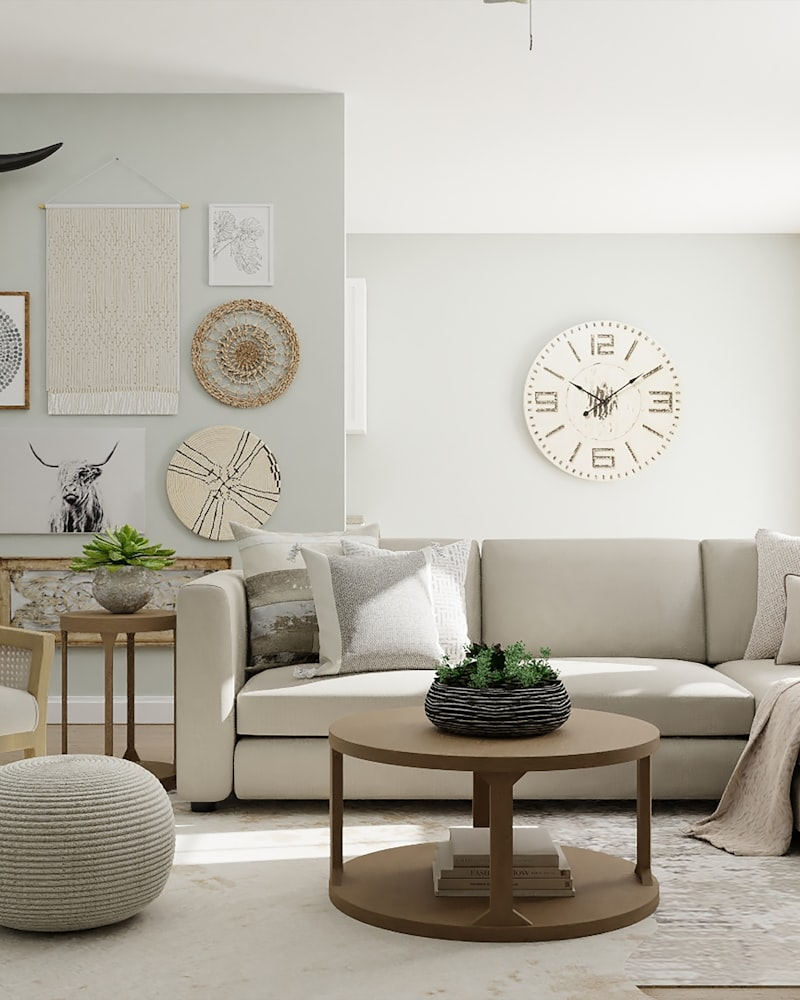
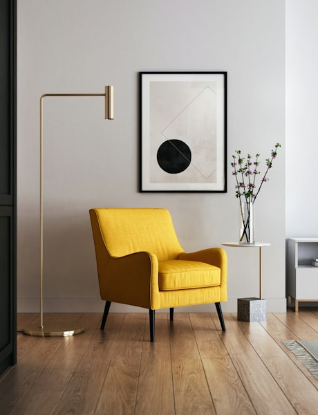
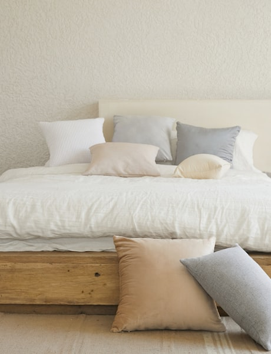
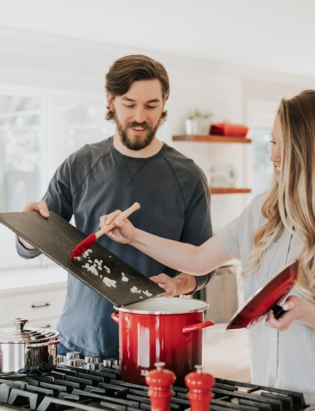
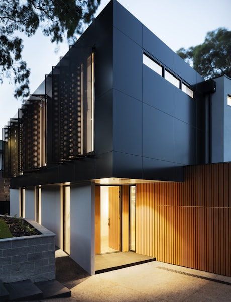
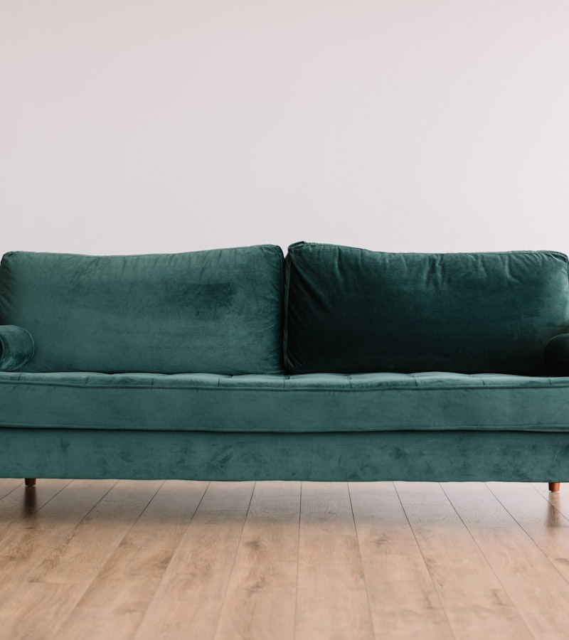
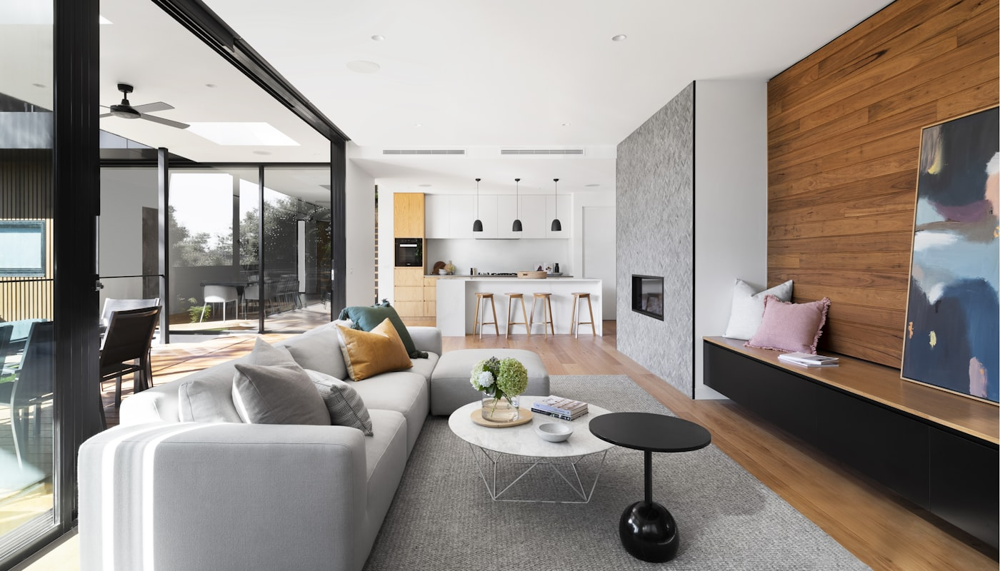

The Art of
Quiet
Luxury
Objects and interiors designed for the way you actually live — unhurried, tactile, and endlessly considered. Images by Unsplash
The Lookbook
01 — 06
No. 01 — Living No. 02 — Ceramics
No. 02 — Ceramics

No. 03 — Textiles
No. 04 — Craft
No. 05 — Bedroom No. 06 — Light
No. 06 — Light

The Maren
Lounge Chair
Hand-upholstered in Oeko-Tex certified linen over a solid white oak frame. Each piece is numbered and made to order in our Copenhagen atelier.
- Material
- White Oak / Belgian Linen
- Dimensions
- W 78 × D 82 × H 74 cm
- Lead Time
- 6 — 8 Weeks
- Origin
- Copenhagen, Denmark
How each piece
comes to life
From raw material to your home — a journey of intention at every step.
Source
We begin with materials — FSC-certified hardwoods from managed Scandinavian forests, linens woven in Flanders, and leathers tanned with chestnut bark.
Design
Every piece starts as a 1:1 clay or foam maquette. We test proportions physically before a single line is drawn digitally.
Craft
Our Copenhagen atelier employs traditional joinery — no screws in the frame, no staples in the upholstery. Hand-tied eight-way springs for the seat.
Deliver
White-glove delivery with in-home placement. Each piece arrives in reusable linen wrapping, not cardboard. We take the packaging back.

The Quiet
Studio Film
A slow meditation on making — 4 minutes inside our Copenhagen workshop, filmed over 12 months.
Watch the FilmLet's create
something enduring
Whether it's a single chair or an entire interior — we'd love to hear what you're imagining. Consultations are always complimentary.
hello@ivoryflow.studio